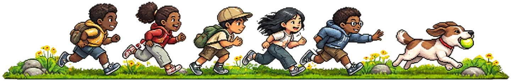

A world built on curiosity
Where will your curiosity take you?
Follow an adventure trail, then step into a sandbox to try an idea of your own. You might predict how a cart will move, build a bridge across an irrigation channel, or discover a second way across.

Introduction
Lumino is a STEAM learning platform where kids explore science, technology, engineering, the arts and mathematics through play. Adventure trails give learners a problem worth solving. Sandboxes give them space to ask “What if?” and put their answers to the test.
A learner might predict what will happen, change one thing, and watch the result. When an idea surprises them, they have a reason to look closer. That’s how Lumino encourages kids to think creatively and find their own ways to solve problems.
Learn, then apply
Each starter lesson begins with a short explanation, gives you a problem to try, and ends with a quick recall check.
Meet your tutors
-

Linda
Warm and methodical, Linda breaks ideas into clear steps and helps you reason through a challenge.
-

Charles
Relaxed and practical, Charles uses familiar examples to show how an idea works.
Choose who guides you through explanations, hints and recaps. You can switch tutors at any point in a lesson.
Try a lesson with Linda or CharlesDesign, test and revise
In the planned exploration game, you’ll use physics and chemistry to build gadgets and gizmos that help you get through the trails. Try a design in a simplified simulation, see what happens, and use what you learn to improve it.
We want learners to bring that same judgment to AI-generated suggestions. Ask what a suggestion assumes, check it against evidence and decide what you would improve.
Find your path
Choose a subject and tell your tutor which ideas feel familiar. Lumino suggests a starting point you can adjust. Open a subject to see what you can try now and what we’re planning next.
Mathematics
Try balancing an equation. In the planned Math Playground, you’ll change one quantity and see how related values, graphs and equations respond.
Physics
Work out a cart’s speed. In the planned exploration game, you’ll build and test gadgets that put ideas like motion and friction to work.
Chemistry
Compare melting and rusting. In the planned exploration game, you’ll choose materials and test how they behave in your gadgets.
Biology
Explore how plants use light. In the planned Biology Lab, you’ll simulate living processes, change conditions and run virtual experiments.
English
Practise choosing a topic sentence. Planned activities include conversations with AI tutors, spaced writing practice and short and long stories with questions about meaning and the writer’s choices.
Frequently asked questions
What is Lumino?
Lumino is a STEAM learning platform with five core subjects and several playable adventure trails. We’re developing a unique sandbox for each topic so learners can experiment with the ideas they meet along the way. A planned resource center will give families ways to revisit ideas and practise together.
Who are Linda and Charles?
Linda and Charles are Lumino’s scripted tutors. Linda gives structured explanations and Charles uses practical examples. You can switch tutors during a lesson.
How does a lesson work?
Learn an idea with your tutor, apply it to a problem, then see what you can recall.
How is my starting point chosen?
You pick a subject and tell your tutor which ideas feel familiar. Lumino suggests a starting point from your answers, and you can change it at any time.
Which subjects can I learn?
Mathematics, physics, chemistry, biology and English are available in the prototype today.
Is Lumino finished?
The early prototype is available now. More learning activities and a resource center for learners, parents and guardians are planned.
Will Lumino be free?
Pioneer testers will get free access during the pilot in recognition of the time and feedback they contribute. We’re considering lifetime access for that first group. After the pilot, we plan to offer a free tier and a paid subscription. Pricing is still undecided.
The road ahead
- Working prototype · Available now
Explore the first lessons, meet the tutors and play the adventure trails.
- Develop the platformer
Refine how learners move through the game and interact with challenges along each trail.
- Plan the lessons
Map out what learners will explore in each subject and how one lesson leads to the next.
- Create the learning materials
Write the explanations, examples, practice activities and recall questions for each lesson.
- Connect lessons with play
Match each lesson with a game challenge and a topic-specific sandbox where learners can test the idea for themselves.
- Set up the AI tutor system
Develop guidance learners can turn to when they get stuck or want to explore a question further.
- Run the first pilot
Invite pioneer testers to try the connected experience and help shape the next release.
Help bring Lumino to more learners
We’re looking for support throughout development. Funding, computing resources and AI credits can help us build and test Lumino. An introduction to a school or a chance to pitch the project can help us reach the kids we’re building it for. If you see another way to help, we’d love to hear from you.